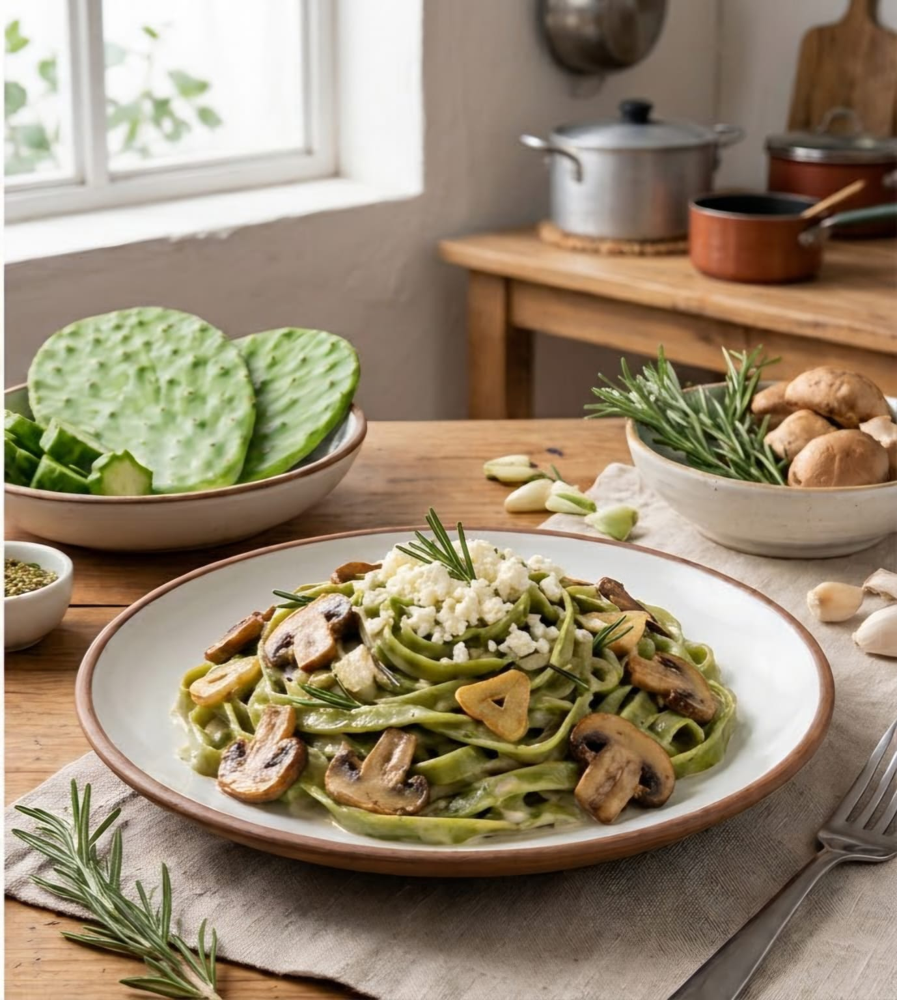

Planet Organic
Encuentra nuestro Fettuccine de Nopal de 300 g en tienda.
La unión entre la tradición alimentaria mexicana y la gastronomía internacional, en una pasta seca artesanal.

La harina de nopal contribuye al contenido de fibra dietética de nuestra pasta.
Uno de los ingredientes más representativos de nuestra cultura y gastronomía.
Su formato fettuccine combina con salsas, vegetales y preparaciones de todo tipo.

Nuestra pasta combina el formato universal del fettuccine con la riqueza botánica, nutricional e histórica del nopal, un ingrediente emblemático de México, reconocido por su contenido de fibra y otros componentes naturales.
Esta combinación da vida a una propuesta innovadora que integra tradición mexicana, creatividad gastronómica y aprovechamiento de ingredientes nacionales.
Más que una pasta, Mila Pasta es una nueva manera de incorporar el nopal a la alimentación cotidiana.
Encuentra nuestro Fettuccine de Nopal de 300 g en tienda.
Estamos sumando nuevos puntos de venta. Muy pronto los verás aquí.
Escríbenos para llevar Mila Pasta a tu negocio.
Contáctanos →
Una opción fresca, vibrante y llena de antioxidantes que resalta el tono verde natural de la pasta.
Ver receta →Una receta reconfortante, de perfil gourmet y con notas terrosas que combinan a la perfección con la harina de nopal.
Ver receta →Somos una empresa nacida en el estado de Hidalgo en 2023. Escríbenos para pedidos, puntos de venta o cualquier duda.